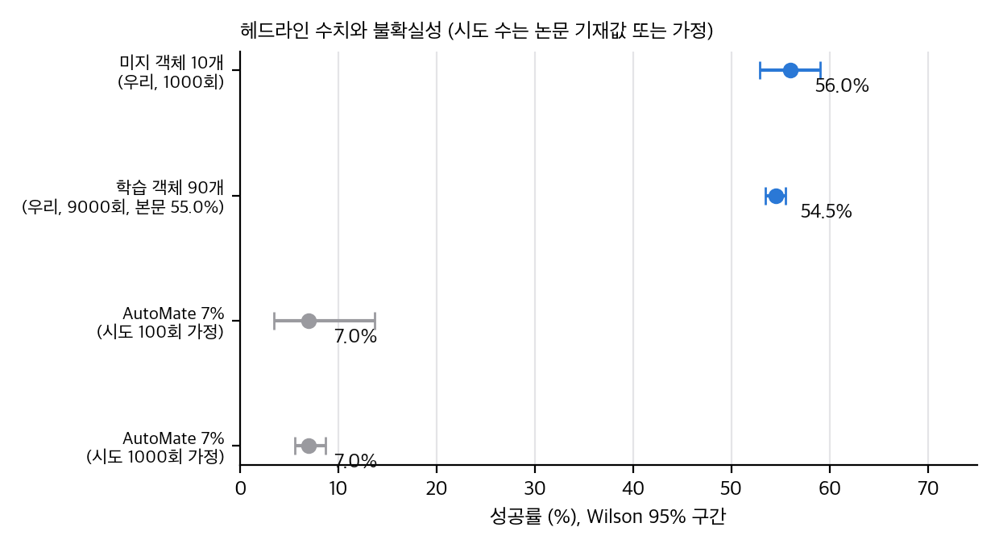
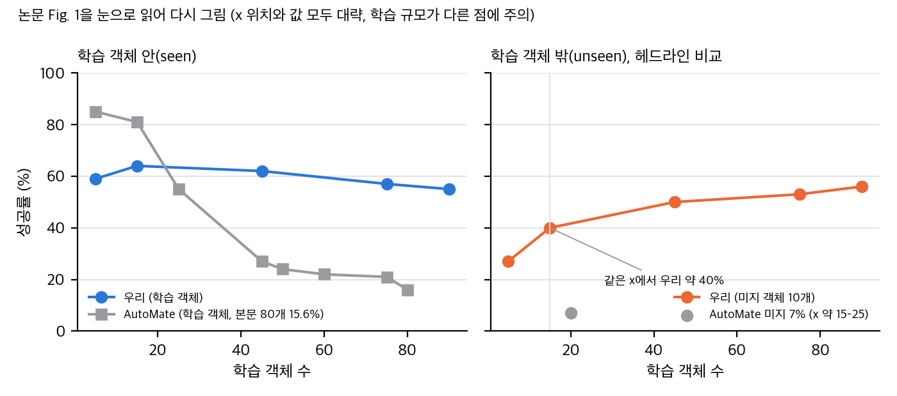
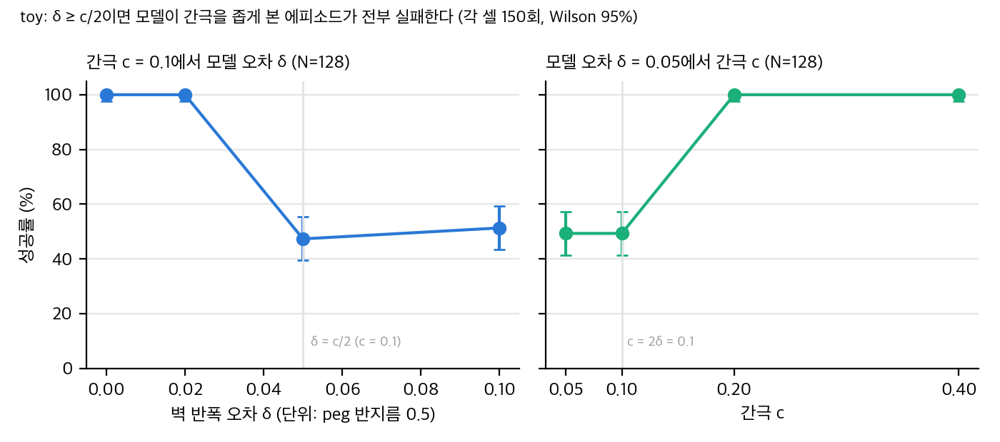
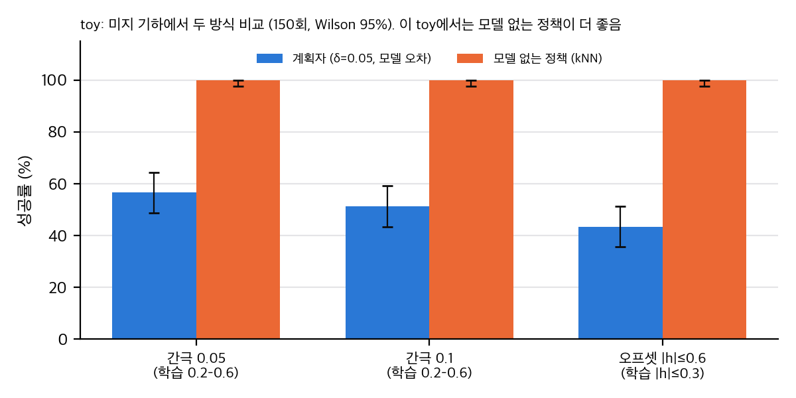

gh 검색과 웹 검색, 2026-11-10 확인). 실험은 Isaac Gym(CUDA GPU 필요)입니다.paper/paper.pdf(v1, 8쪽, 3.4 MB). 본문 인용은 절·식·그림 번호로 합니다. 페이지 번호는 쓰지 않습니다.04_claim_verification.md §0).03_analysis.md, 주장별 판정은 04_claim_verification.md에 있습니다.저자들은 TD-MPC2(잠재 공간 세계 모델 + MPPI 계획)를 삽입(insertion) 과제 하나에 적용하고, 그 모델 하나로 90개 조립품(AutoMate 데이터셋 100쌍 중 90쌍)을 학습합니다. 입력은 손목 카메라의 96×96 깊이 영상과 로봇 고유감각(24차원)입니다. 학습에는 CAD 기반 역분해 시연을 쓴 보상이 들어갑니다. 학습하지 않은 10쌍(ID가 가장 큰 10개)에서 제로샷 성공률 56%(100회 × 10쌍)를 보고하고, 비교 대상으로 AutoMate의 **7%**를 씁니다. 이 7%는 저자들이 AutoMate 논문에서 가져온 수치이며, 같은 분할과 같은 학습 규모에서 재측정한 값이 아닙니다. 실험은 전부 Isaac Gym 시뮬레이션이고, 실물 실험은 없습니다.
주장 (Abstract, I절).
기여 (I절 마지막 문단). 새 알고리즘보다 "시각 모델 기반 RL이 산업 조립에서 쓸모 있다"는 것을 보이는 데 무게를 둡니다. 저자들은 스스로 기여를 "설계 선택의 실용 지침"이라고 씁니다(I절, "Notably, the key contribution ... is not to propose a new algorithm").
문제 설정 (I절, III절). 실물 조립은 손으로 짠 제어기나 부품별 전문 정책에 의존합니다. 제안은 정책 학습을 다수 객체의 한 모델로 옮기는 것입니다.
논문은 II절 "Related Work" 제목 아래 본문이 없고, 관련 연구 문단이 III절 "Preliminaries" 제목 아래 들어 있습니다(편집 오류로 보입니다). 여기서는 실제 내용 위치를 따라 씁니다.
MDP 정의 (III절, "Robotic insertion with RL"). 상태는 깊이 영상 x ∈ R^{96×96}과 고유감각 q ∈ R^24로 근사하고, 부분 관측 MDP로 봅니다. 행동은 6자유도 end-effector 증분 자세(정규화 [-1, 1])입니다. 저자들은 "full state s는 실제 응용에서 알 수 없어 [x, q]로 근사한다"고 씁니다.
TD-MPC2 구조 (식 1). 잠재 세계 모델은 다섯 부분으로 구성됩니다.
학습 목적 (식 2–4). 잠재 예측 손실을 시간 지수 가중 λ로 합산합니다. 단계 손실은 보상 교차엔트로피, 가치 교차엔트로피, 그리고 잠재 공간 예측 손실 ∥z′_t − sg(h(s′_t))∥²입니다(식 4, stop-gradient). 픽셀을 복원하는 디코더는 없습니다. 저자는 "without decoding raw observations"라고 씁니다(III절 첫 단락). 따라서 이 세계 모델이 예측하는 것은 잠재 상태, 보상, 가치이고, 영상이나 물체 자세, 접촉력을 직접 예측하지 않습니다.
계획. 추론 때는 MPPI(Williams 외 2015)로 행동 시퀀스를 샘플링하고, 정책 사전분포를 샘플에 섞습니다. 샘플 수, 호라이즌, 반복 수, 온도는 이 논문에 없습니다. TD-MPC2 참조(III절 "Refer to [30], [31]")에만 있습니다. 저장소 기본값은 03_analysis.md §7에 있습니다.
관측과 행동. 깊이 영상 96×96(손목 카메라 한 대, 시뮬레이션용 RealSense D435 모사), 고유감각 24차원입니다. 고유감각은 다음과 같습니다(IV절 "Observations").
중요한 점: 소켓 자세는 시뮬레이터의 참값에 백색 잡음을 더한 것으로 보입니다. 실제 장비에서는 이것을 추정하는 단계가 필요하고, 그 단계는 논문에서 다루지 않습니다. 저자들이 말하는 "CAD와 객체 ID가 필요 없다"는 것은 객체 기하 정보에 한정된 주장입니다. 자세 추정은 포함하지 않습니다(§4 C12).
인코더 (식 6). h(x, q) = h_fuse(h_depth(x) + h_prop(q)). h_depth는 얕은 CNN, h_prop과 h_fuse는 2층 MLP이고, 모두 SimNorm 출력입니다. 저자들은 "객체 ID의 one-hot은 미지 객체에 옮길 수 없으므로 시각 정보만으로 구별한다"고 씁니다(V절 "Zero-shot generalization").
행동 출력. 학습된 정책 사전분포와 MPPI 계획으로 행동을 냅니다(III절과 V절).
보상 (식 5). R = r_penetration·(r_dist + r_imitation + r_success). r_dist는 플러그와 목표의 음의 거리, r_imitation은 역분해 절차로 만든 시연을 따라가는 항, r_success는 성공 이진항입니다. 계수는 생략했고, 저자들은 이 보상을 [6]과 [1]에서 "수정 없이" 가져왔다고 씁니다. 이 보상은 학습 객체마다 역분해 시연이 필요하므로, 학습 단계에서는 객체 기하(CAD에서 만든 시연)를 쓴다는 뜻입니다. 저자들은 이 점을 "privileged"라고 따로 쓰지 않습니다.
학습 설정 (VI-A "Implementation details", IV절).
학습 구현 세부가 빠진 것. 샘플 수와 호라이즌은 없습니다. 환경 스텝의 정의(병렬 수 포함)는 없어, AutoMate의 "50M 스텝"과 직접 비교는 단위가 맞지 않을 수 있습니다. 두 방법의 단계 수를 같다고 가정하면 안 됩니다.
| 결과 | 값 | 출처 |
|---|---|---|
| 특수 모델 100개 평균 | 79.78% (AutoMate 70.31%) | VI-B "Single-assembly", Fig. 5 |
| 생성 모델, 학습 객체 90개(seen) | 55.0% (본문), 54.5% (Fig. 7) | VI-B, Fig. 7 |
| 생성 모델, 미지 10개 | 56% (제로샷) | Abstract, VI-B, Fig. 1 |
| AutoMate, 학습 80개(seen) | 15.6% | VI-B |
| AutoMate, 미지 | 7% (Fig. 1의 점 하나) | Fig. 1, Abstract |
| 미지 곡선 (우리) | 5개 27%, 15개 40%, 45개 50%, 75개 53%, 90개 56% | Fig. 1 오른쪽 |
특수 모델. 79.78%대 70.31%입니다. 저자들은 AutoMate가 "큰 소켓"에서 이기고 우리 방법은 "작고 얇은 소켓"에서 이긴다고 씁니다. 296과 726에서 떨어짐(VI-B)을 인정합니다. 가림(occlusion)이 원인일 것이라고 추측합니다.
생성 모델 확장. 학습 객체가 늘면 seen 성능은 약간 떨어지고(59 → 55), unseen 성능은 오릅니다(27 → 56). 저자들은 "in-domain과 out-of-domain이 이 수준에서 saturation할 것"이라고 가정합니다(VI-B). 이것은 가설로 표시되어 있습니다.
미세조정 (Fig. 6, VI-B). 90개 생성 모델을 10개 미지 객체에 미세조정하고 처음부터 학습과 비교합니다. x축은 0–30k 환경 스텝이고, 처음부터 학습 기준선은 2M 스텝 값을 점선으로 씁니다. 두 곡선의 스텝 범위가 다릅니다. 또 1053에서는 미세조정(약 0.4–0.6)이 처음부터(약 0)보다 낫지만 2M 기준선(0.8)에 못 미치고, 1132에서는 두 방법 모두 낮습니다(처음부터 2M 기준선 0.25, 미세조정 약 0.05). 저자들이 말한 "in some cases exceeds"는 1036과 1041 두 개를 가리킵니다.
절제 (Fig. 7, VI-B).
저자들이 인정하는 한계는 네 가지입니다. (i) 가림이 큰 조립품에서 실패, (ii) 학습 객체가 늘수록 seen 성능이 약간 떨어짐, (iii) 생성 학습용 조립 데이터셋이 부족함, (iv) 실물 배포는 아직 어렵고 깊이 잡음과 얇은 부품, 실시간 처리가 문제. 논문은 실물 결과가 없음을 명시하지 않고 "still challenging"이라고 씁니다.
03_analysis.md §2).02_prior_work.md §4)재현 코드는 analysis/table_check.py(→ table_check_results.json), analysis/insertion_toy.py(→ insertion_toy_results.json)에 있습니다. 둘 다 CPU, numpy·scipy, 단일 스레드입니다. toy는 약 73초 걸립니다. 논문에 없는 값은 가정으로 표시했습니다.

직접 계산: 헤드라인 수치와 Wilson 95% 구간. AutoMate 7%는 시도 수를 100회와 1000회로 가정.
table_check.py)| 항목 | 값 | 근거 |
|---|---|---|
| 우리, 미지 10개 × 100회 | 560/1000 = 56.0%, Wilson 95% [52.9, 59.1] | 본문 VI-A(시도 수), Fig. 1 |
| AutoMate 미지 7% | 시도 수 불명. 100회 가정 → [3.4, 13.8]%, 1000회 가정 → [5.6, 8.8]% | Fig. 1 |
| Fisher 검정 (우리 대 AutoMate) | p = 1.9×10⁻²³ (n=100 가정), p = 1.1×10⁻¹³⁴ (n=1000 가정) | 이항 근사 |
해석. 시도 단위 검정은 의미가 있습니다. 그러나 이 검정은 "같은 조건"의 차이를 보지 않습니다. 세 가지가 달라서 비교가 불균형합니다.
Fig. 1을 눈으로 읽어 같은 x 위치에서 비교하면 40% 대 7%입니다. 그래도 차이는 크지만, 헤드라인의 56% 대 7%보다는 작습니다. 이 값은 읽은 값이므로 ±2pp 정도 오차가 있습니다.

직접 다시 그림: 논문 Fig. 1을 눈으로 읽은 규모 곡선. x 위치와 값은 대략이며, 학습 규모가 다른 점에 주의.
재계산 확인. 특수 모델 평균(79.78%)과 그 생성 모델 값(55.0%, 54.5%)은 Fig. 5와 Fig. 7에서 맞습니다. 55.0%(본문)와 54.5%(Fig. 7)가 다른 것은 반올림이나 평가 시점 차이로 보이지만 확인되지 않았습니다.
미지 객체 10개의 평균 56%에서 객체 간 SD를 가정하면 다음과 같습니다.
| 객체 간 SD(가정) | 평균의 SE | 95% 구간 |
|---|---|---|
| 20pp | 6.3pp | [43.6, 68.4]% |
| 25pp | 7.9pp | [40.5, 71.5]% |
| 30pp | 9.5pp | [37.4, 74.6]% |
가정 근거: Fig. 6의 0스텝(미세조정 시작점)을 눈으로 읽은 값(1036 ≈ 0.95, 1053 ≈ 0.02, 1132 ≈ 0.0, 나머지 0.55–0.85)의 SD는 0.33입니다. 이 값도 눈으로 읽은 것이라 대략적입니다. 그래서 구간의 하한이 40% 근처라는 것, 즉 7%보다 훨씬 위라는 결론은 유지됩니다. 그러나 "56%는 ±3pp 정확도로 알려졌다"는 해석은 틀립니다.
Fig. 6의 0스텝 값 평균은 0.597입니다(§5). 본문 56%와 대략 같은 수준입니다.
| 객체별 차이 SD(가정) | SE | z | p (정규 근사) |
|---|---|---|---|
| 10pp | 1.0 | 9.5 | < 10⁻¹⁰ |
| 15pp | 1.5 | 6.3 | 2.7×10⁻¹⁰ |
| 20pp | 2.0 | 4.7 | 2.2×10⁻⁶ |
| 30pp | 3.0 | 3.2 | 1.6×10⁻³ |
시도 단위로 계산하면 구간이 ±0.6pp로 나오지만, 객체를 단위로 두지 않은 과신입니다. 결론: 평균 차이 9.5pp는 가정 SD 30pp까지 유의합니다. 그러나 AutoMate의 특수 모델 수치가 재측정이 아니라면(VI-B 각주는 "재현 수치를 저자가 확인했다"고 씁니다) 같은 조건인지는 확인되지 않았습니다.
막대 값만 쓸 수 있습니다. 시드 수와 시드별 분산은 없습니다.
| 비교 | 차이 | 근사 p(시도 단위, 시드 무시) | 해석 |
|---|---|---|---|
| 생성: 고유감각만 39.6 → 깊이(기본) 54.5 | +14.9pp | 2×10⁻⁸⁹ | 시각 효과는 크고 안정적으로 보임. 시드 분산이 14pp보다 작다고 보기 어려운 이유는 없음 |
| 생성: 깊이(기본) 54.5 → 대체 카메라 46.4 | −8.1pp | 3×10⁻²⁰ | 카메라 위치 효과. 시드 1개면 확인 필요 |
| 생성: 커리큘럼 없음 52.1 → 기본 54.5 | +2.4pp | 0.0013 | 시드 분산보다 작을 수 있음. "consistently"는 과장 |
| 생성: 커리큘럼 없음 52.1 → 시연 100개 56.5 | +4.4pp | 3×10⁻⁹ | 저자는 "marginal"이라고 씀 |
| 특수: 고유감각만 55.2 → 깊이 79.8 | +24.6pp | 0 | 특수 모델에서 시각 효과 매우 큼 |
| 특수: 커리큘럼 없음 76.2 → 기본 79.8 | +3.6pp | 6×10⁻⁴³ | 5 seed 평균이면 SE를 알아야 함 |
Holm 보정(8개 비교, 시도 단위 근사)은 모든 p를 그대로 두거나 키울 뿐입니다. 시드 분산을 넣으면 결론이 달라질 수 있습니다. 따라서 시각 효과(특수와 생성 모두)는 방향이 안정적이고, 커리큘럼 효과(2–4pp)는 확인되지 않았습니다.
논문에는 샘플 수와 호라이즌이 없습니다. TD-MPC2 저장소의 기본 설정(332f19e: 호라이즌 3, 샘플 512, 반복 6, 정책 궤적 24)을 가정합니다.
식 2는 λ 가중 합입니다. 단계 손실(식 3)은 보상의 two-hot 교차엔트로피, 가치의 교차엔트로피, 그리고 잠재 예측 손실(식 4)입니다. 식 4의 stop-gradient 대상은 목표 인코더 출력 h(s′)입니다. 따라서 학습 신호는 잠재 공간의 일치와 보상·가치에서만 옵니다. 픽셀 재구성 손실이 없으므로, 이 세계 모델은 "깊이 영상에서 무엇이 보이는지"를 직접 학습하지 않습니다. 소켓 위치와 간극은 보상과 가치를 통해서만 간접적으로 들어갑니다. 이 점이 "깊이 영상으로 기하를 추론한다"는 저자 설명과 어떻게 맞는지는 논문이 보여주지 않았습니다.
insertion_toy.py)설계 (요약, 자세한 내용은 스크립트 설명).

직접 계산(toy): 모델 오차 δ와 간극 c에 따른 성공률(각 150회, Wilson 95%).
결과 (마지막 실행).
| 실험 | 조건 | 성공 |
|---|---|---|
| 모델 오차 δ | c = 0.1, N = 128 | δ=0: 150/150, δ=0.02: 150/150, δ=0.05: 71/150, δ=0.1: 77/150 |
| 부호별 (δ=0.05) | 모델이 간극을 넓게 봄 / 좁게 봄 | 72/72 대 0/78 |
| 부호별 (δ=0.1) | 같음 | 78/78 대 0/72 |
| 간극 c | δ = 0.05, N = 128 | c=0.05: 74/150, c=0.1: 74/150, c=0.2: 150/150, c=0.4: 150/150 |
| 샘플 수 N | δ = 0.05, c = 0.05 | N=16: 73/150, N=64: 72/150, N=256: 76/150 |
| 모델 없는 정책 | 학습 간극 0.2, 0.4 | 150/150, 150/150 |
| 모델 없는 정책 | 미지 간극 0.05, 0.1, 0.15 | 150/150 each |
| 모델 없는 정책 | 미지 오프셋 | h |
| 같은 미지 조건 비교 | 계획자(δ=0.05) 대 kNN | 간극 0.05: 85 대 150 (p = 7×10⁻²⁴), 간극 0.1: 77 대 150 (p = 2×10⁻²⁷), 오프셋: 65 대 150 (p = 2×10⁻³³) |

직접 계산(toy): 미지 기하에서 계획자와 모델 없는 kNN 정책의 성공률(150회, Wilson 95%).
해석.
한계. 점 peg, 운동학적 이동, 벽 접촉 규칙이 단순합니다. 학습된 모델을 쓰지 않고 δ를 주입했습니다. 깊이 영상과 소켓 잡음을 모델링하지 않았습니다. 따라서 "학습된 세계 모델의 오차가 얼마인가"에 대한 답은 주지 않습니다.
샘플 행동 시퀀스 U_k ~ N(μ, σ²)에 대해 비용 J_k를 구하고, 가중치 w_k ∝ exp(−(J_k − min J)/λ)로 μ를 갱신합니다. toy와 TD-MPC2 모두 이 형태입니다. 여기서 온도 λ가 작으면 최적 샘플에 집중하므로, 모델 오차를 더 강하게 따릅니다. 이 논문은 λ를 보고하지 않아 민감도를 확인할 수 없습니다.
공식 코드를 찾지 못했으므로 코드 대조(04_code_verification.md)는 만들지 않았습니다. 대신 논문의 주장을 수치와 그림으로 검증했습니다(C-번호). 재계산 근거는 03_analysis.md, 원자료는 table_check_results.json과 insertion_toy_results.json에 있습니다.
| 항목 | 판정 |
|---|---|
| 버전 | arXiv:2609.28258v1 (2026-09-23, cs.RO). 이 저장소에는 v1만 있습니다(abs 페이지에 v1만 있음). |
| 학회 | IROS 2026 표기는 arXiv Comments에만 있고, 논문 본문에는 채택 문구가 없습니다. 채택 여부는 불명입니다. README에 "상태 불명"으로 적습니다. |
| 라이선스 | arXiv nonexclusive-distrib 1.0(abs 페이지 확인). CC BY 아님. |
| PDF 권리 문구 | 1쪽에 arXiv 찍힘만 있고, IEEE 저작권 문구는 없습니다(텍스트 추출과 1쪽 이미지로 확인). |
| 게시 규칙 | 논문 그림과 표는 개인용 리포트·PPT에만 넣습니다. 게시본은 우리가 다시 그린 그래프와 수치만 씁니다. |
| 코드 | 공식 코드 없음(논문 본문 링크 없음, gh search repos·코드 검색·웹 검색 결과 없음). AutoMate 측 코드도 찾지 못함(02_prior_work.md §4). |
| 실험 환경 | 전부 시뮬레이션(Isaac Gym). 실물 결과 없음. |
판정 기준: 확인(재계산이나 그림과 일치), 부분(일치하지만 해석이 넓음), 확인 불가(자료 없음), 과장 가능(같은 근거로 더 좁게만 말할 수 있음).
| 번호 | 주장 (논문 위치) | 근거 | 판정 | 메모 |
|---|---|---|---|---|
| C1 | 미지 10개에서 제로샷 56% (Abstract, VI-B, Fig. 1) | 100회 × 10쌍 = 1000회. Wilson [52.9, 59.1]% (03 §1) |
부분 | 수치는 맞음. 객체 단위 구간은 약 ±15–19pp (03 §2). 10개 평균이라 "56%"의 정밀도는 과대. |
| C2 | 모델 없는 기준선 7%와 비교 (Abstract) | AutoMate 논문 수치 인용(VI-A). Fig. 1의 7%는 학습 객체 약 15–25 부근의 한 점 | 확인 불가 (비교 조건 불일치) | 학습 규모, 분할, 입력(CAD 조건)이 다름. 같은 x에서 우리 값은 약 40%. "model-free"는 PPO 기반이라는 뜻에서만 맞음. |
| C3 | 학습 객체가 늘수록 미지 성능이 오른다 (Abstract, VI-B) | Fig. 1 오른쪽: 5, 15, 45, 75, 90개에서 27, 40, 50, 53, 56% | 확인 | 점 5개, seed 수 불명, 단조 증가. 시드 분산 없이 기울기를 말하기는 어려움. |
| C4 | seen 성능은 학습 객체가 늘면 약간 떨어진다 (VII절) | Fig. 1 왼쪽: 약 59 → 55% | 확인 | 저자 인정. |
| C5 | 학습하지 않은 객체에서 in-domain 수준에 도달 (VI-B) | 56 대 55.0(또는 54.5) | 부분 | 차이는 우연일 수 있음. 미지 10개의 객체 간 분산이 큼. |
| C6 | 시각 입력이 결정적이다 (VI-B, Fig. 7) | 생성: 39.6 → 54.5, 특수: 55.2 → 79.8 | 확인 | 효과 크기가 커서 시드 분산과 무관하게 방향은 안정적으로 보임. 단, 생성 모델의 시드 수는 불명. |
| C7 | 커리큘럼은 일관되게 성능을 올린다 (VI-B) | 생성: 52.1 → 54.5(+2.4), 특수: 76.2 → 79.8(+3.6) | 과장 가능 | 차이가 작고 시드 분산이 없음. "일관되게"는 근거가 약함. |
| C8 | 특수 모델이 AutoMate보다 우수, 79.78 대 70.31% (VI-B, Fig. 5) | 9.47pp, 쌍 SD를 가정(10–30pp)하면 p < 0.002 (03 §3) |
부분 | 방향은 유의. AutoMate 수치의 재측정 여부는 각주가 "검증했다"고만 씀. 실패 객체(296, 726)도 있음. |
| C9 | 미세조정이 처음부터 학습보다 데이터 효율이 좋다 (VI-B, Fig. 6) | 10개 중 대부분에서 30k 스텝 시점 우세 | 부분 | 비교 스텝 범위가 다름(처음부터 2M 기준선). 1053과 1132는 효과 약함 또는 없음. |
| C10 | 일부 객체에서 미세조정이 처음부터 점근 성능을 넘는다 (1036, 1041) | Fig. 6: 1036 미세조정 ≈0.9–0.95 대 기준선 0.85, 1041 두 곡선 겹침 | 부분 | 1036만 차이가 뚜렷. 1041은 우연 범위. |
| C11 | 미지 객체를 데이터만으로 조립한 최초 시스템 (Abstract) | 선행 시스템 비교 없음 | 확인 불가 | 선행 조사를 하지 않았음. 최초라는 주장은 검증하지 않음. |
| C12 | 배포 때 CAD와 객체 ID가 필요 없다 (V절) | 관측에 소켓 자세 잡음 추정(IV절 proprio) 포함 | 부분 | 기하 정보는 입력되지 않지만, 소켓 자세는 입력됨. 실물에서는 자세 추정이 별도로 필요. |
| C13 | 기하 정보 없이 "unseen geometry"에서 작동 (Abstract, I절) | Fig. 2 설명: 학습과 테스트는 같은 데이터 분포 | 과장 가능 | "같은 분포의 다른 자산"이 정확. "unknown geometry"는 입력에 기하가 없다는 뜻. |
| C14 | "세계 모델" (I절, III절) | 디코더 없음, 잠재 전이, 보상, 가치 (식 1–4) | 확인 (용어 주의) | 영상이나 자세를 예측하지 않는 잠재 모델. "world model"이 영상 예측을 뜻한다고 읽으면 틀림. |
| C15 | 학습 규모에 따라 확장된다 (Abstract) | C3과 같음 | 부분 | 학습 객체 5–90개, 90 이상은 없음. 저자도 saturation을 가설로 씀. |
| C16 | 특수 모델 2M 스텝이 AutoMate 50M 스텝보다 효율적 (VI-A) | 스텝 정의(병렬 수) 불명 | 확인 불가 | 두 값의 단위가 같다는 근거가 없음. 효율 주장은 실제 벽시계 시간이나 샘플 수로 다시 말해야 함. |
| C17 | 가림이 큰 조립품에서 실패하는 원인 (VI-B) | 저자 추측 ("We conjecture") | 확인 불가 | 저자도 추측이라고 씀. 이 저장소에서 검증하지 않음. |
| C18 | 특수 정책 40시간, 생성 3일, RTX 3090 (VI-A) | 본문 명시 | 확인 (자기 보고) | 재확인 불가. 이 맥에서 재현할 수 없음. |
| C19 | 미지 분할은 ID 기준의 선택 편향을 줄인다 (VI-A) | 마지막 10개 ID: 1036, 1041, 1053, 1079, 1092, 1102, 1125, 1129, 1132, 1136 | 확인 불가 | ID가 자산 계열과 관련 있는지 확인하지 못함. 분할이 계열 단위일 수 있음. |
| C20 | AutoMate 결과는 공식 코드로 재현했다 (VI-A) | 공식 코드 미발견 | 확인 불가 | 웹사이트 저장소만 발견. 각주의 "released codebase"는 공개 위치를 밝히지 않음. |
| C21 | 실물 배포는 가능할 것 (V절 "making deployment on real hardware feasible in the future") | 실물 실험 없음 | 확인 불가 | 저자도 VII절에서 어렵다고 씀. |
| C22 | 생성 정책을 AutoMate와 같은 조건으로 학습 (VI-A "Baselines") | 분할과 규모가 다름 | 과장 가능 | 같은 환경 계열이지만 같은 조건은 아님. 저자도 "exact splits 불명"이라고 인정. |
결론 (한 줄). 논문 그대로의 재현은 불가능합니다. 이 맥에서도 불가능합니다. 아이디어를 옮기는 것은 중간에서 높은 노력이 들고, 병목은 모델이 아니라 조립 환경과 자산, 역분해 시연 보상을 다시 만드는 일입니다.
| 항목 | 판정 | 근거 |
|---|---|---|
| 공식 재현 | 불가능 | 공식 코드 없음. AutoMate 학습 코드도 찾지 못함. Isaac Gym 기반 환경이 필요함. 데이터와 체크포인트 없음. |
| 이 맥(Apple M4 Pro, 약 24 GiB 통합 메모리, MPS, CUDA 없음, torch 미설치)에서 재현 | 불가능 | Isaac Gym은 NVIDIA CUDA GPU가 필요합니다. 논문 학습은 RTX 3090에서 특수 40시간, 생성 3일입니다. 맥에서 같은 시뮬레이터를 돌릴 방법이 없습니다. |
| 맥에서 부분 재현(TD-MPC2 공식 코드를 다른 시뮬레이터, 예: MuJoCo 조립 환경에서 학습) | 조건부 | TD-MPC2 공식 코드는 MIT입니다(tdmpc2 999 별, 2026-10-20 push). torch 설치(승인 필요) 후 MPS에서 소형 학습은 가능해 보이나 미확인입니다. 조립 자산과 보상을 새로 만들어야 합니다. |
| 아이디어 재구현 노력 | 중간에서 높음 | 식 6 인코더(CNN + 2층 MLP + SimNorm, 수십 줄), 식 1–4 모델(TD-MPC2 재사용). 병목은 (a) 100쌍 자산 확보 또는 대체 자산, (b) 역분해 시연 기반 보상(식 5)을 만드는 파이프라인, (c) 소켓 잡음 자세 입력 설계입니다. 추정: 환경과 보상 구축에 수 주, 학습에 GPU 수일. |
| 필요한 하드웨어 | NVIDIA GPU 1장(RTX 3090급 이상 권장), Linux, Isaac Gym 설치 | 논문 VI-A의 학습 시간에서 추정. 실물 실험은 Franka, 손목 RealSense D435급 카메라, 실물 소켓 세트 필요. |
| 실물 재현 | 불가능 (현재 자료로) | 실물 실험 없음, 저자도 어렵다고 씀. |
| 수치 검증(재계산) | 가능, 완료 | table_check.py, Fig. 1, 5, 6, 7 읽기 |
| toy 검증 | 가능, 완료 | insertion_toy.py(CPU, 73초). 결과와 한계는 03 §8. |
판정 근거 요약.
table_check.py).table_check.py T6).insertion_toy.py).재현이나 설치는 사용자 승인 전에는 하지 않습니다. 승인 전까지 재현 항목은 후보로만 둡니다.
확인일: 2026-11-10. 논문 본문의 참고문헌 번호는 [번호]로 씁니다.
| 축 | 대표 연구 | 이 논문과의 관계 |
|---|---|---|
| 조립 시뮬레이션과 데이터 | Joinable [4], Assemble-them-all [5] (CAD 조립 자산과 역분해 시연) | 자산 100쌍과 역분해 시연의 출처 |
| 특수 정책 (RL, 저차원 상태) | IndustReal [6] (PPO, 접촉 보상), Force-guided exploration [7] | 보상 형태(식 5)를 가져온 출처 |
| 생성 정책 (CAD 점군 조건) | AutoMate [1] (RSS 2024, arXiv:2407.08028) | 주 기준선. 특수 PPO 학습, 생성 정책은 BC·DAgger·RL 증류 |
| 잠재 세계 모델 + 계획 | TD-MPC [30], TD-MPC2 [31], 다과제 TD-MPC2 [32] | 이 논문의 기반 알고리즘 |
| 시각 세계 모델 (조작) | MoDem-V2 [18], Finetuning offline WM [19] | 같은 저자 계열의 선행 |
| 능동 지각 조립 | Fabrica [42] (arXiv:2506.05168) | 저자들이 향후 방향으로 언급 |
이 논문의 위치. 방법 자체는 TD-MPC2를 그대로 쓰고, 새로운 점은 (1) 깊이 + 고유감각 인코더(식 6), (2) 90개 조립품 다과제 학습, (3) 미세조정 실험입니다. 알고리즘 기여가 아니라는 점은 저자들도 씁니다(I절).
| 폴더 | 관계 | 이 논문에서 가져올 것 |
|---|---|---|
openwam/ (arXiv:2609.07398) |
세계 행동 모델(WAM). 영상 생성 prior 기반이라 잠재 모델과 목적이 다름 | "세계 모델이 무엇을 예측하는가"의 대비 (영상 대 잠재) |
agentic_wam/ (arXiv:2610.30136) |
영상·행동을 한 모델에서 함께 denoise하는 WAM | 같은 질문: 예측 대상이 영상이어야 하나 |
contact_disassembly/ (CONTACT, arXiv:2603.08560) |
접촉이 많은 분해 과제, 시각 + 촉각 비교 | 실물 접촉 삽입에서 시각만으로 충분한지 |
dexforce/ (arXiv:2501.10356) |
손끝 힘을 목표에 더하는 시연 정책 | 힘 정보 대 시각 정보 |
reactive_grasp/ (arXiv:2609.30082) |
접촉력 분배 QP, 힘 제어 | 접촉 모델 기반 제어의 난이도 |
stiffness_copilot/ (arXiv:2603.14068) |
손목 영상 정책이 임피던스 행렬을 고르는 공유 제어 | 삽입의 임피던스 설계 대 학습 정책 |
chronospolicy/ (arXiv:2610.13929) |
시간 정보 주입, 센서 지연 무작위화 | 실물 전환에서 지연 처리 |
논문 본문에는 URL, 프로젝트 페이지, 코드 링크가 없습니다(paper/paper.txt 전체 검색). arXiv 초록 페이지에도 코드 링크가 없습니다. 아래는 gh search repos와 gh api로 확인한 결과입니다.
| 저장소 | 무엇인가 | 공식 여부 | 라이선스 | 별 | 최근 커밋 |
|---|---|---|---|---|---|
| (InsertionWM 코드) | gh search repos, 코드 검색("2609.28258", "InsertionWM"), 웹 검색 모두 결과 없음 |
— | — | — | — |
| nicklashansen/tdmpc2 | TD-MPC2 공식 구현(방법의 기반) | 방법 원저자 공식 | MIT | 999 | 332f19e (2026-10-20) |
| bingjietang718/automate | AutoMate 프로젝트 웹사이트 소스(README에 CC BY-SA 4.0 웹사이트 표기). 정책 학습 코드가 아닙니다 | 저자 계정, 코드 아님 | 명시 없음(웹사이트 CC BY-SA 4.0) | 0 | ce95071 (2024-10-26 push) |
| isaac-sim/IsaacGymEnvs | Isaac Gym 강화학습 환경 모음. AutoMate 환경이 이 계열에 기반했는지는 확인하지 못함 | NVIDIA 공식 | NOASSERTION (LICENSE 파일 확인 필요) | 2,950 | aeed298 (2024-10-26 push) |
| ShaneFlandermeyer/tdmpc2-jax | TD-MPC2의 JAX 구현(커뮤니티) | 비공식 | MIT | 82 | push 2026-07-28 |
bingjietang718/automate는 웹사이트 소스뿐입니다. 논문이 말하는 공식 학습 코드는 이 검색으로는 찾지 못했습니다. 따라서 AutoMate 수치를 우리 조건에서 재현할 방법이 없습니다.tdmpc2/config.yaml, commit 332f19e): 호라이즌 3, 샘플 512, 엘리트 64, 반복 6, 정책 궤적 24, 온도 0.5, 잠재 차원 512, 가치 bins 101. 이 논문의 설정이라고 확정할 수 없습니다. 논문에 명시가 없기 때문입니다(03_analysis.md §7).결론. 공식 코드가 없습니다. 재현 가능한 자산은 TD-MPC2 공식 구현(MIT)과 Isaac Gym 환경 모음뿐입니다. 이 맥에서 TD-MPC2 코드를 그대로 쓰는 것은 가능하지만(torch 설치 필요), 조립 환경과 자산은 직접 만들어야 합니다.